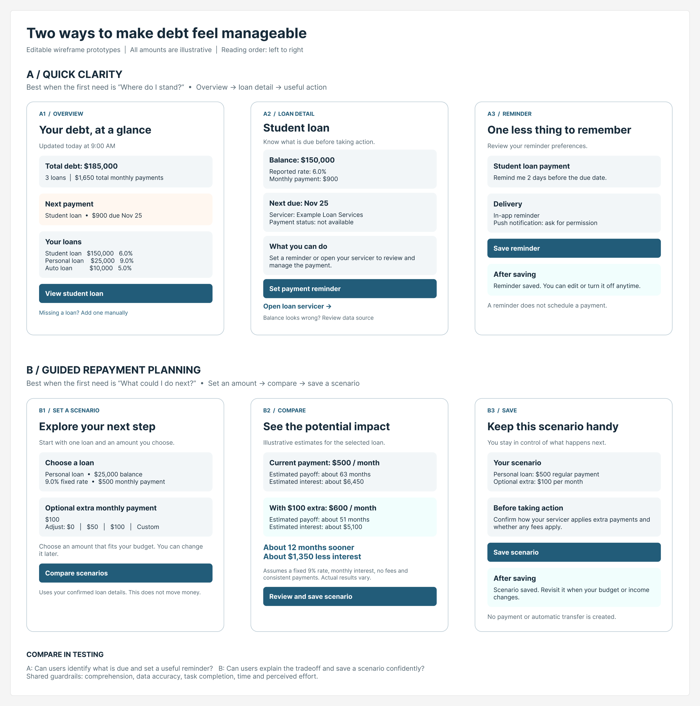
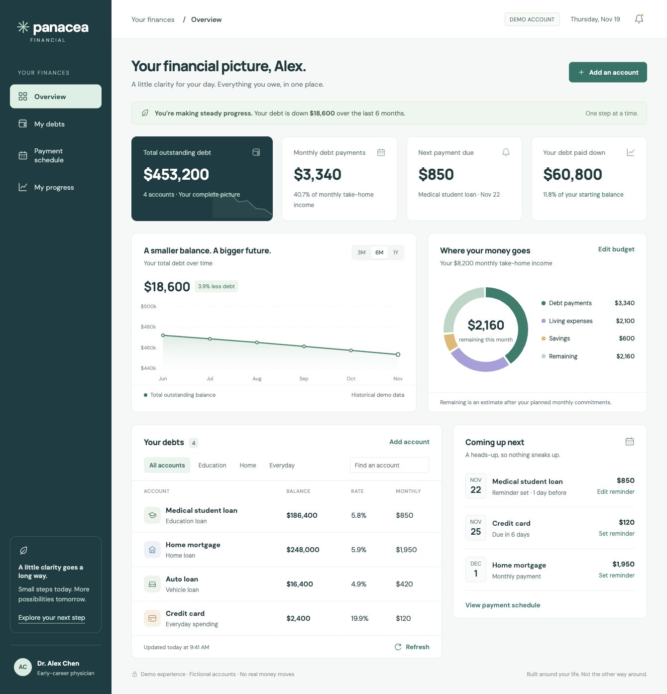

THE DESIGN PROCESS
Explore. Expand. Refocus.
After our conversation, I revisited the requirements and simplified the experience. These are three stages of the same idea, rather than three competing final solutions.
Two ways into the problem.
A: Quick clarity. An overview, loan details and a reminder. Answer “Where do I stand?” before asking the user to do more.
B: Guided planning. A simple extra-payment scenario. Help users explore what their next step might change.
Do users first need to understand their current obligations, or explore a future repayment plan?

A fuller picture, with too much to scan.
I expanded the concept into a working dashboard: balances, income allocation, charts, account details and upcoming payments.
The connections became clearer, but the four summary tiles, navigation and planning features added more weight than this first experience needed.

A lighter, more useful first experience.
I brought the essentials together on one main page and removed the onboarding flow and extra navigation.
Lead with progress in plain language. Show take-home pay after deductions, a flexible living-expense estimate, debt details and the next payments.
Keep debt details and upcoming payments in view. Use Panacea’s blue and orange palette, and make the refinancing and consolidation cards relevant to the user’s own balances.
Fewer competing numbers. Clearer sources. More useful information before asking for more effort.
Refinancing and consolidation appear as options to compare, not automatic recommendations.
Does simpler actually feel easier?
Can a doctor add or connect one account and correctly explain what is due next?
Do users understand where the figures came from, what is missing and what needs review?
Measure task completion, time and comprehension. Ask how confident users feel afterward.